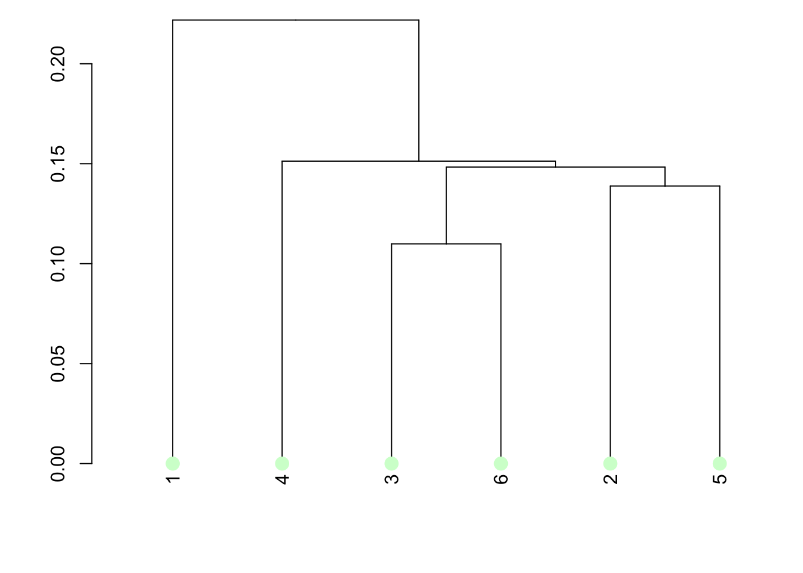

Chapter 2 Data Visualization
2.0.1 Box plots
p1<- df %>%
ggplot() +
geom_histogram(aes(x = Total_Power, y = ..density..),
colour = "black", fill = "white",
binwidth = 40, na.rm = T) +
geom_density(aes(x = Total_Power, y = ..density..),
alpha = .2, fill = "#FF6666", na.rm = T) +
stat_boxplot(aes(x = Total_Power, y = -0.0025),
geom ='errorbar', width = 0.0025) +
geom_boxplot(aes(x = Total_Power, y = -0.0025),
fill = "lightgrey", width = 0.0025, na.rm = T) +
geom_point(aes(x = mean(Total_Power, na.rm = T), y = -0.0025),
shape = 3, size = 1.5) +
labs( x = "Electrical load [kW]" , y = "Density [-]") +
theme_classic() + coord_flip()
p2 <- ggplot_box_legend()
ggarrange(p1, p2, nrow = 1)## Warning: Removed 82 rows containing non-finite values
## (stat_boxplot). differend visualizations and variables ### scatter plots useful to identify linear relations if grouped
2.0.2 carpet plots
condensed way to identify time series info
2.0.3 calendar plots
2.0.4 Network
library(networkD3)
df <- merge.data.frame(c("Grid"), c("A","B","C","D","E","F","X","Y","Z"))
df$level <- 1
df1 <- rbind(
merge.data.frame("A", c("loadA1", "loadA2")),
merge.data.frame("B", c("loadB1", "loadB2", "loadB3", "loadB4")),
merge.data.frame("C", c("Print shop","DIMAT", "Bar Ambrogio", "Rectory","Mechanical Room", "Data centre", "Canteen", "Unlabeled") ),
merge.data.frame("D", c("loadD1", "loadD2", "loadD3")),
merge.data.frame("E", c("loadE1", "loadE2")),
merge.data.frame("F", c("loadF1", "loadF2")),
merge.data.frame("X", c("loadX1", "loadX2","loadX3")),
merge.data.frame("Y", c("loadY1", "loadY2")),
merge.data.frame("Z", c("loadZ1"))
)
df1$level <- 2
data = rbind(df,df1)
# Plot
p <- simpleNetwork(data, height="100px", width="100px",
Source = 1, # column number of source
Target = 2, # column number of target
linkDistance = 10, # distance between node. Increase this value to have more space between nodes
charge = -900, # numeric value indicating either the strength of the node repulsion (negative value) or attraction (positive value)
fontSize = 14, # size of the node names
fontFamily = "sans", # font og node names
linkColour = "#666", # colour of edges, MUST be a common colour for the whole graph
nodeColour = "red", # colour of nodes, MUST be a common colour for the whole graph
opacity = 0.9, # opacity of nodes. 0=transparent. 1=no transparency
zoom = T # Can you zoom on the figure?
)
p# save the widget
# library(htmlwidgets)
# saveWidget(p, file=paste0( getwd(), "/HtmlWidget/networkInteractive2.html"))2.0.5 tree
`Total Electrical Load` <- rbind(
merge.data.frame("A", c("DIGEP", "DIMEAS")),
merge.data.frame("B", c("DENERG", "DIATI", "DISEG", "Bar Denise")),
merge.data.frame("C", c("Print shop","DIMAT", "Bar Ambrogio", "Rectory","Mechanical Room", "Data centre", "Canteen", "Unlabeled") ),
merge.data.frame("D", c("DAUIN", "CLA", "DET")),
merge.data.frame("E", c("DIATI", "DISAT")),
merge.data.frame("F", c("DAUIN", "DET")),
merge.data.frame("X", c("I3P")),
merge.data.frame("Y", c("Canteen")),
merge.data.frame("Z", c("offices"))
)
library(collapsibleTree)
collapsibleTree( `Total Electrical Load`, c("x", "y"),
fillByLevel = TRUE,
zoomable = FALSE,
inputId = TRUE
# nodeSize = "leafCount"
)